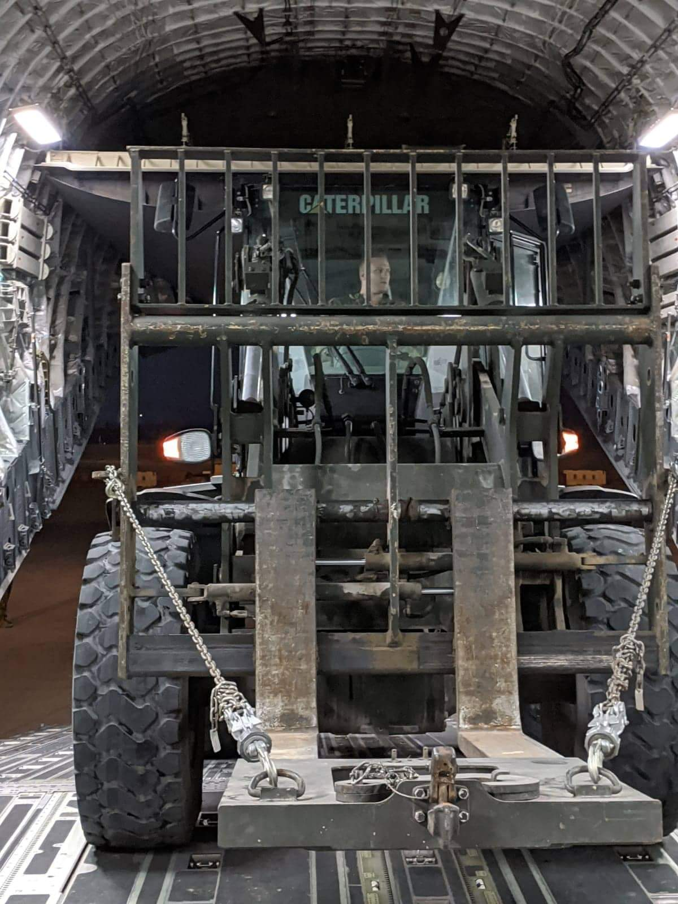
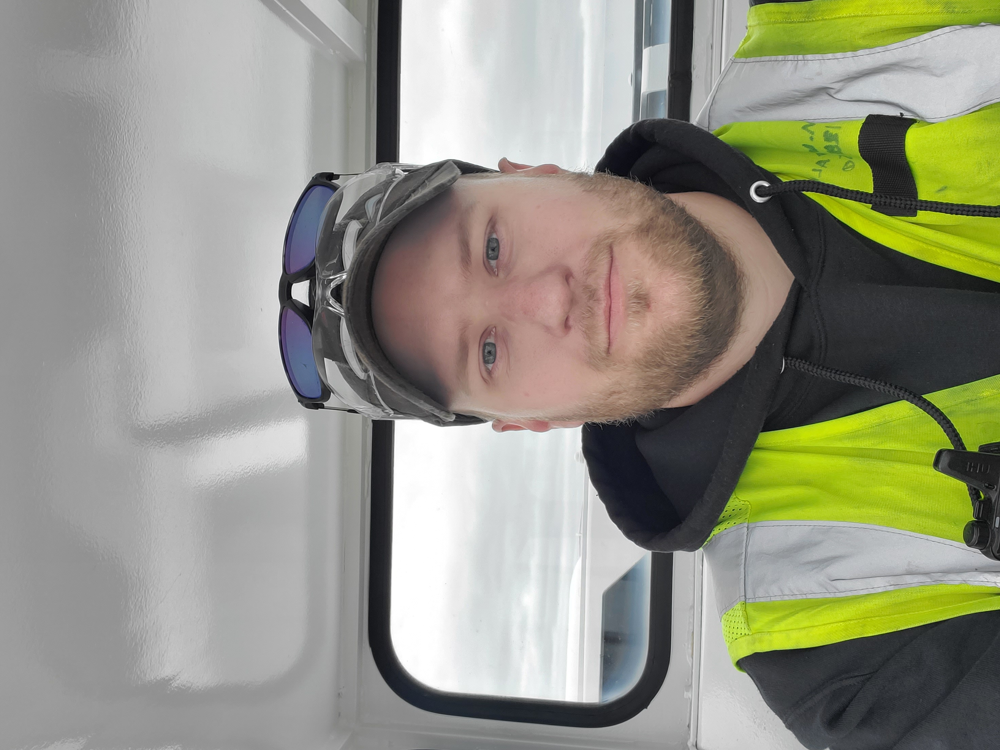

Father | Husband | Veteran | Programmer
Hello. My name is Madison Jon Walker but you can call me Jon. The following is a little bit about myself.
I used to be an aviation mechanic. Although I loved this work after some soul-searching, I returned to school and changed careers. In April 2022 I enrolled into Full Sail University’s computer science program. This career change has been an amazing experience so far. I thank my amazing wife, Marissa, for supporting me and keeping me going. In September 2024 I graduated with my bachelor of science in computer science and can't wait to see where this new adventure takes me.
I have been on many adventures in my life. I joined the US Navy Reserves in March of 2015. I rose to the rank of Petty Officer First Class. This chapter of my life took me to some cool places and led me to some fun times. I traveled across the United States from Chicago to Florida, New Mexico to New Jersey; but the best part is I got to see the world. In 2019 I was deployed to Dubai, UAE. While there I got to hone my leadership skills. I was the flight line leader and directly supervised the loading and unloading of over 3 million pounds of cargo off c-40s, c-130s, c-17s, and so many more aircraft. While in Dubai this is where my love for coding started to shine. Any chance I got on my off time I would learn as much as I could about coding and started my programming journey with HTML5.
I am the father of four amazing kids. They are the reason I took the steps to make such a large career change. They are the reasons I push so hard to achieve my goals. They keep me on my toes and have made the last two years the best. While I was going to school I was a stay-at-home dad. It was always nice to have my kids pull me away from my projects when I was struggling. My oldest daughter has already started to take a liking to programming and asks me all the time to explain what I am doing.
Long story short I am a highly motivated and dedicated father, husband, veteran, and programmer. Life has been crazy in the last 2 years and I am excited to see where this next chapter takes me. I am always looking to improve in all areas of my life. I know that the skills I have learned through the different experiences I have had will make me the perfect fit with any team.
